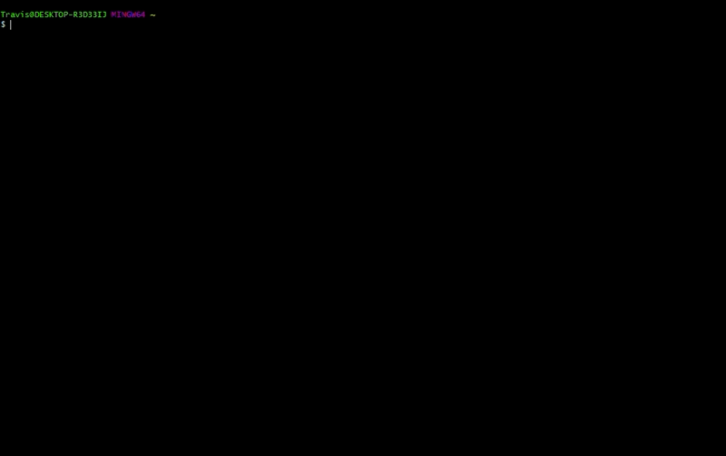

Day 1 - Module 01: Warming up
UM Bioinformatics Core
1 Warming Up
In this module, we will:
- cover basic materials needed
- familiarize ourselves with remote computing
- prepare for later modules
1.1 Building Blocks

1.2 Example Files Exercise:
- Download the zipped archive from the slack channel
- Locate, move (if desired), and unzip it
- Remember how to access these files
1.3 Local vs remote exercise:
- Become familiar with the different appearance of the local shell
- Briefly explore your local files
- Log in to the aws instance with
ssh <username>@bfx-workshop01.med.umich.edu - Become familiar with appearance of the remote shell
- Briefly explore remote files
- Use
exitto log off, return to local shell
# Familiarize with local shell appearance
# Briefly explore your local files
ls -l
# Log in to the aws instance via ssh
ssh <username>@bfx-workshop01.med.umich.edu
# Familiarize yourself with differences between local and remote shell
# Briefly explore remote files
ls -l
# Log off, return to local shell
exit
Click here for demonstration of local (git-bash on Windows) vs remote (AWS)

1.4 Orientation exercise
Note: We will provide additional time during this exercise to ensure that everyone is prepared to move forward.
Orientation exercise:
- Log in (or confirm logged in) to aws instance
- Ensure in home directory with
cd - Use
lsto view references - Use
lsto view input fastq files - Use
mkdirto create a folder for our analysis
# Log in to aws remote
ssh <username>@bfx-workshop01.med.umich.edu
# Ensure we are in home directory
cd
# View our references
ls ~/data/refs
# View our input fastq files
ls ~/data/reads
# Create a folder for our analysis
mkdir ~/analysis

LS0tCnRpdGxlOiAiRGF5IDEgLSBNb2R1bGUgMDE6IFdhcm1pbmcgdXAiCmF1dGhvcjogIlVNIEJpb2luZm9ybWF0aWNzIENvcmUiCm91dHB1dDoKICAgICAgICBodG1sX2RvY3VtZW50OgogICAgICAgICAgICBpbmNsdWRlczoKICAgICAgICAgICAgICAgIGluX2hlYWRlcjogaGVhZGVyLmh0bWwKICAgICAgICAgICAgdGhlbWU6IHBhcGVyCiAgICAgICAgICAgIHRvYzogdHJ1ZQogICAgICAgICAgICB0b2NfZGVwdGg6IDQKICAgICAgICAgICAgdG9jX2Zsb2F0OiB0cnVlCiAgICAgICAgICAgIG51bWJlcl9zZWN0aW9uczogdHJ1ZQogICAgICAgICAgICBmaWdfY2FwdGlvbjogdHJ1ZQogICAgICAgICAgICBtYXJrZG93bjogR0ZNCiAgICAgICAgICAgIGNvZGVfZG93bmxvYWQ6IHRydWUKLS0tCjxzdHlsZSB0eXBlPSJ0ZXh0L2NzcyI+CmJvZHl7IC8qIE5vcm1hbCAgKi8KICAgICAgZm9udC1zaXplOiAxNHB0OwogIH0KcHJlIHsKICBmb250LXNpemU6IDEycHQKfQo8L3N0eWxlPgoKIyBXYXJtaW5nIFVwCgpJbiB0aGlzIG1vZHVsZSwgd2Ugd2lsbDoKCiogY292ZXIgYmFzaWMgbWF0ZXJpYWxzIG5lZWRlZAoqIGZhbWlsaWFyaXplIG91cnNlbHZlcyB3aXRoIHJlbW90ZSBjb21wdXRpbmcKKiBwcmVwYXJlIGZvciBsYXRlciBtb2R1bGVzCgojIyBCdWlsZGluZyBCbG9ja3MKCjxicj4KPGJyPgo8YnI+CjxpbWcgc3JjPSJpbWFnZXMvYnVpbGRpbmctYmxvY2tzLnBuZyIgd2lkdGg9IjgwMCIgLz4KPGJyPgo8YnI+Cjxicj4KCgojIyBFeGFtcGxlIEZpbGVzIEV4ZXJjaXNlOgoKMS4gRG93bmxvYWQgdGhlIHppcHBlZCBhcmNoaXZlIGZyb20gdGhlIHNsYWNrIGNoYW5uZWwKMi4gTG9jYXRlLCBtb3ZlIChpZiBkZXNpcmVkKSwgYW5kIHVuemlwIGl0CjMuIFJlbWVtYmVyIGhvdyB0byBhY2Nlc3MgdGhlc2UgZmlsZXMKCjxicj4KPGJyPgo8YnI+Cjxicj4KPGJyPgo8YnI+CgojIyBMb2NhbCB2cyByZW1vdGUgZXhlcmNpc2U6CgoxLiBCZWNvbWUgZmFtaWxpYXIgd2l0aCB0aGUgZGlmZmVyZW50IGFwcGVhcmFuY2Ugb2YgdGhlIGxvY2FsIHNoZWxsCjIuIEJyaWVmbHkgZXhwbG9yZSB5b3VyIGxvY2FsIGZpbGVzCjMuIExvZyBpbiB0byB0aGUgYXdzIGluc3RhbmNlIHdpdGggYHNzaCA8dXNlcm5hbWU+QGJmeC13b3Jrc2hvcDAxLm1lZC51bWljaC5lZHVgCjQuIEJlY29tZSBmYW1pbGlhciB3aXRoIGFwcGVhcmFuY2Ugb2YgdGhlIHJlbW90ZSBzaGVsbAo1LiBCcmllZmx5IGV4cGxvcmUgcmVtb3RlIGZpbGVzCjYuIFVzZSBgZXhpdGAgdG8gbG9nIG9mZiwgcmV0dXJuIHRvIGxvY2FsIHNoZWxsCgo8YnI+Cjxicj4KPGJyPgoKYGBgCiMgRmFtaWxpYXJpemUgd2l0aCBsb2NhbCBzaGVsbCBhcHBlYXJhbmNlCiMgQnJpZWZseSBleHBsb3JlIHlvdXIgbG9jYWwgZmlsZXMKbHMgLWwKIyBMb2cgaW4gdG8gdGhlIGF3cyBpbnN0YW5jZSB2aWEgc3NoCnNzaCA8dXNlcm5hbWU+QGJmeC13b3Jrc2hvcDAxLm1lZC51bWljaC5lZHUKIyBGYW1pbGlhcml6ZSB5b3Vyc2VsZiB3aXRoIGRpZmZlcmVuY2VzIGJldHdlZW4gbG9jYWwgYW5kIHJlbW90ZSBzaGVsbAojIEJyaWVmbHkgZXhwbG9yZSByZW1vdGUgZmlsZXMKbHMgLWwKIyBMb2cgb2ZmLCByZXR1cm4gdG8gbG9jYWwgc2hlbGwKZXhpdApgYGAKCgo8YnI+Cjxicj4KPGJyPgoKPGRldGFpbHM+CjxzdW1tYXJ5PkNsaWNrIGhlcmUgZm9yIGRlbW9uc3RyYXRpb24gb2YgbG9jYWwgKGdpdC1iYXNoIG9uIFdpbmRvd3MpIHZzIHJlbW90ZSAoQVdTKTwvc3VtbWFyeT4KCjxpbWcgc3JjPSJpbWFnZXMvbG9jYWxfdl9yZW1vdGUuZ2lmIiB3aWR0aD0iODAwIiAvPgoKPC9kZXRhaWxzPgoKPGJyPgo8YnI+Cjxicj4KCiMjIE9yaWVudGF0aW9uIGV4ZXJjaXNlCgpOb3RlOiBXZSB3aWxsIHByb3ZpZGUgYWRkaXRpb25hbCB0aW1lIGR1cmluZyB0aGlzIGV4ZXJjaXNlIHRvIGVuc3VyZSB0aGF0IGV2ZXJ5b25lIGlzIHByZXBhcmVkIHRvIG1vdmUgZm9yd2FyZC4KCk9yaWVudGF0aW9uIGV4ZXJjaXNlOgoKMS4gTG9nIGluIChvciBjb25maXJtIGxvZ2dlZCBpbikgdG8gYXdzIGluc3RhbmNlCjIuIEVuc3VyZSBpbiBob21lIGRpcmVjdG9yeSB3aXRoIGBjZGAKNC4gVXNlIGBsc2AgdG8gdmlldyByZWZlcmVuY2VzCjUuIFVzZSBgbHNgIHRvIHZpZXcgaW5wdXQgZmFzdHEgZmlsZXMKNi4gVXNlIGBta2RpcmAgdG8gY3JlYXRlIGEgZm9sZGVyIGZvciBvdXIgYW5hbHlzaXMKCjxicj4KPGJyPgo8YnI+CgpgYGAKIyBMb2cgaW4gdG8gYXdzIHJlbW90ZQpzc2ggPHVzZXJuYW1lPkBiZngtd29ya3Nob3AwMS5tZWQudW1pY2guZWR1CiMgRW5zdXJlIHdlIGFyZSBpbiBob21lIGRpcmVjdG9yeQpjZAojIFZpZXcgb3VyIHJlZmVyZW5jZXMKbHMgfi9kYXRhL3JlZnMKIyBWaWV3IG91ciBpbnB1dCBmYXN0cSBmaWxlcwpscyB+L2RhdGEvcmVhZHMKIyBDcmVhdGUgYSBmb2xkZXIgZm9yIG91ciBhbmFseXNpcwpta2RpciB+L2FuYWx5c2lzCmBgYAoKCjxicj4KPGJyPgo8YnI+Cjxicj4KPGJyPgo8YnI+CjxpbWcgc3JjPSJpbWFnZXMvYnVpbGRpbmctYmxvY2tzLWNoZWNrbWFyay5wbmciIHdpZHRoPSI4MDAiIC8+Cjxicj4KPGJyPgo8YnI+Cjxicj4KPGJyPgo8YnI+Cjxicj4KPGJyPgo8YnI+Cjxicj4KPGJyPgo8YnI+Cjxicj4KPGJyPgo8YnI+Cg==